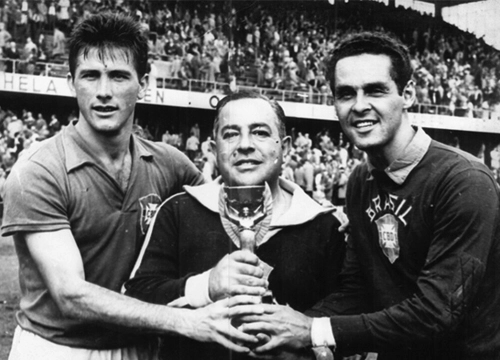
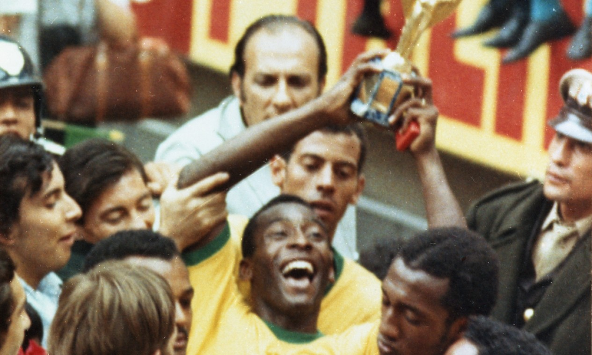

O Brasil não é apenas o país do futebol; ele é o único dono do mundo por cinco vezes. Desde os gramados da Europa em 1958 até os estádios modernos da Ásia em 2002, a nossa camisa canarinho construiu a dinastia mais respeitada do planeta. Somos a única seleção a disputar todas as edições da Copa do Mundo e a ostentar cinco estrelas no peito — cada uma delas conquistada com a pura essência do futebol-arte, dribles desconcertantes e craques imortais que mudaram a história do esporte.

